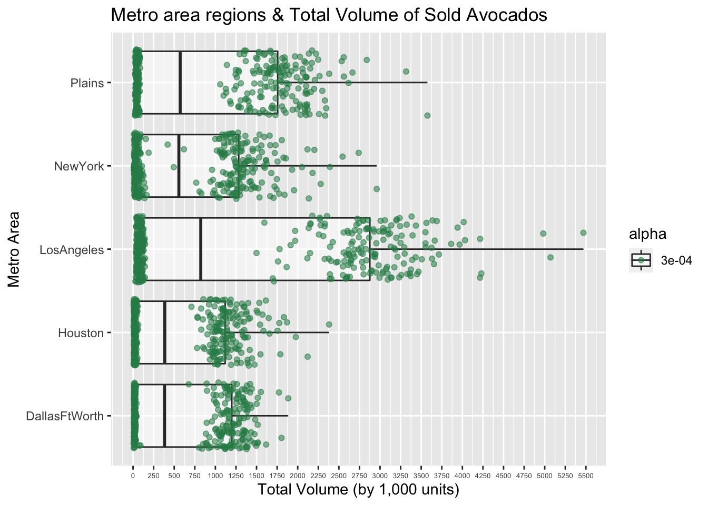
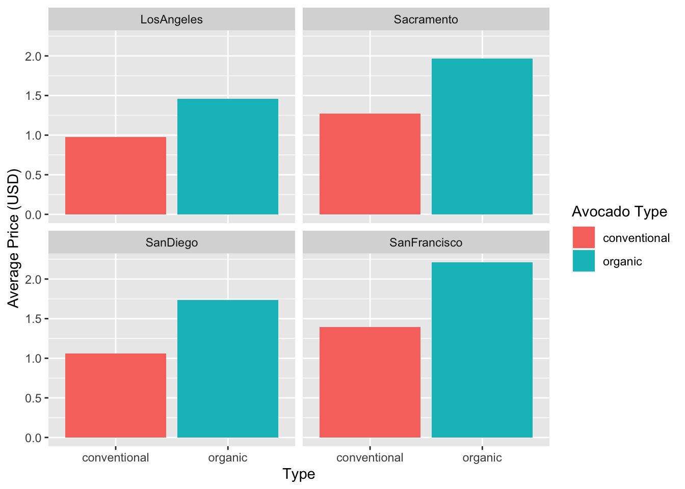
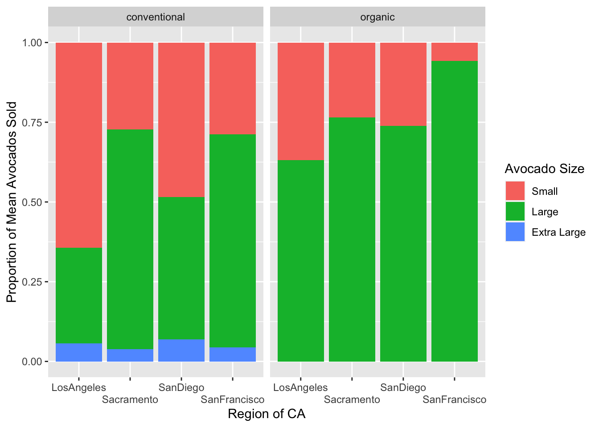

Click me to see the code!
library(tidyverse)
library(here)
library(scales)
avocados <- read_csv(here::here("supporting_artifacts",
"Lab 4 NR",
"avocado.csv"))library(tidyverse)
library(here)
library(scales)
avocados <- read_csv(here::here("supporting_artifacts",
"Lab 4 NR",
"avocado.csv"))The data set contains information about the weekly total retail volume (units) of Hass avocados throughout the nation, from 2015 to 2018. Additionally, the data set holds average price for an avocado, whether the avocado is organic or not, and the total number of Hass avocados sold for each PLU code: PLU 4046, PLU 4225, and PLU 4770, which correspond to the Hass avocado size (small, medium/large, and extra large respectively). This data set also includes information about the number of bags the avocados were sold in, and the sizes of the bags they were sold in.
avocados_clean <- avocados |>
#fixing column names
rename(total_volume = `Total Volume`,
average_price = `AveragePrice`,
total_bags = `Total Bags`,
date = `Date`)
# creating helper data sets
avocados_region <- data.frame(region = c("Midsouth", "GreatLakes",
"Northeast",
"SouthCentral", "Southeast",
"West", "WestTexNewMexico"))
avocados_state <- data.frame(state = "California")
avocados_totalUS <- data.frame(region = "TotalUS")avocados_clean |>
pivot_longer(cols = `4046`:`4770`,
names_to = "PLU",
values_to = "vol_by_PLU") |>
select(region, date, total_volume, year, type, PLU, vol_by_PLU) |>
semi_join(avocados_region, by = "region") |>
filter(year == "2017",
type == "organic",
PLU == "4046") |>
slice_max(order_by = vol_by_PLU)# A tibble: 1 × 7
region date total_volume year type PLU vol_by_PLU
<chr> <date> <dbl> <dbl> <chr> <chr> <dbl>
1 Northeast 2017-02-19 592952. 2017 organic 4046 127052.The Northeast region sold the most organic, small Hass avocados in 2017, in the week of February 19th. The region’s volume sold of this specific avocado type was 127,051.75 units.
# resource used: https://www.statology.org/separate-function-in-r/
# separating date observations into year, month, and day
avocados_clean |>
semi_join(avocados_region, by = "region") |>
separate(col = date,
into = c('year','month','day'),
sep = '-') |>
group_by(month) |>
summarise(sum_total_volume = sum(total_volume)) |>
slice_max(order_by = sum_total_volume)# A tibble: 1 × 2
month sum_total_volume
<chr> <dbl>
1 02 525348600.The highest volume of avocados sold in a month was 533,030,497 avocados, which occurred in January.
Metro area regions that sold the most total avocados, based on their respective average total volume across the years 2015 to 2018 were
# using helper data sets to isolate the metro areas
avocados_metro <- avocados_clean |>
anti_join(avocados_state, by = c('region' = 'state')) |>
anti_join(avocados_region, by = c('region' = 'region')) |>
anti_join(avocados_totalUS, by = c('region' = 'region')) |>
rename(metro_area = `region`)
# finding the top 5 metro areas with highest avg total volume
metro_top_5 <- avocados_metro |>
select(metro_area, total_volume, year) |>
group_by(metro_area) |> # group by city in order to calculate total volume means # within each city
summarise(mean_total_vol = mean(total_volume)) |>
arrange(desc(mean_total_vol)) |>
slice_head(n = 5)# resources used for changing axis intervals:
# https://www.geeksforgeeks.org/how-to-change-axis-intervals-in-r-plots/
# https://www.datanovia.com/en/blog/ggplot-axis-ticks-set-and-rotate-text-labels/
#| fig.align: 'center'
#| fig.cap: 'Only total volumes of the top 5 metro areas with the highest overall average total volume are shown'
avocados_metro |>
semi_join(metro_top_5, by = c("metro_area" = "metro_area")) |>
mutate(total_volume = total_volume / 1000) |> #changing units of total volume to thousand units
ggplot(mapping = aes(x = total_volume,
y = metro_area,
alpha = 0.0003)) +
geom_boxplot() +
geom_jitter(color = "seagreen") +
scale_x_continuous(breaks = seq(from = 0, to = 5500, by = 250)) +
theme(axis.text.x = element_text(size = 5)) +
labs(title = 'Metro area regions & Total Volume of Sold Avocados',
x = 'Total Volume (by 1,000 units)',
y = 'Metro Area')
We’re going to answer some questions about regions in California.
#helper data frame for only CA cities
CA_cities <- data.frame(city = c('LosAngeles', 'SanDiego',
'Sacramento', 'SanFrancisco'))
avocados_california_regions <- avocados_metro |>
semi_join(CA_cities, by = c("metro_area" = "city")) |>
group_by(metro_area, type) |>
mutate(avg_price_by_type = mean(average_price)) |>
distinct(metro_area, .keep_all = TRUE)
avocados_california_regions |>
select(metro_area, type, avg_price_by_type) |>
group_by(metro_area) |>
summarise(
diff_price = round(abs(
avg_price_by_type[match("conventional", type)] -
avg_price_by_type[match("organic", type)]), digits = 2))# A tibble: 4 × 2
metro_area diff_price
<chr> <dbl>
1 LosAngeles 0.48
2 Sacramento 0.7
3 SanDiego 0.67
4 SanFrancisco 0.81# tibble of avg prices by CA region and avocado type
avocados_california_regions |>
group_by(metro_area) |>
select(metro_area, type, avg_price_by_type)# A tibble: 8 × 3
# Groups: metro_area [4]
metro_area type avg_price_by_type
<chr> <chr> <dbl>
1 LosAngeles conventional 0.976
2 Sacramento conventional 1.27
3 SanDiego conventional 1.06
4 SanFrancisco conventional 1.40
5 LosAngeles organic 1.46
6 Sacramento organic 1.97
7 SanDiego organic 1.73
8 SanFrancisco organic 2.21 Los Angeles difference in means of conventional vs. organic ≈ $0.48
Sacramento difference in means of conventional vs. organic ≈ $0.70
San Diego difference in means of conventional vs. organic ≈$0.67
San Francisco difference in means of conventional vs. organic ≈ $0.81
avocados_california_regions |>
ggplot(mapping = aes(x = type, y = avg_price_by_type, fill = type)) +
geom_col() +
facet_wrap(~metro_area) +
labs(fill = "Avocado Type",
x = "Type",
y = "Average Price (USD)")
San Francisco is the region where the difference in price of organic vs. conventional is largest.
Visually, the difference in height (height representing the average price) between the conventional and organic columns is largest in the San Francisco graph, with the difference looking to be about 0.65.
avocados_california_regions_props <- avocados_california_regions |>
select(metro_area, type, total_volume, `4046`, `4225`, `4770`) |>
pivot_longer(cols = `4046`:`4770`,
names_to = "PLU",
values_to = "volume_by_PLU") |>
group_by(metro_area, PLU, type) |>
mutate(
proportion = volume_by_PLU / total_volume
)|>
distinct(metro_area, .keep_all = TRUE)# resource for x axis tick labels
# https://stackoverflow.com/questions/13297995/changing-font-size-and-direction-of-axes-text-in-ggplot2
#legend labels
# https://www.statology.org/ggplot-legend-labels/
# https://www.statology.org/change-legend-title-ggplot2/
avocados_california_regions_props |>
ggplot(mapping = aes(x = metro_area,
y = proportion,
fill = PLU)) +
geom_col(position = "fill") +
facet_wrap(~type) +
labs(x = "Region of CA",
y = "Proportion of Mean Avocados Sold",
fill = "Avocado Size") +
scale_x_discrete(guide = guide_axis(n.dodge = 2)) +
scale_fill_discrete(labels = c('Small', 'Large', 'Extra Large'))